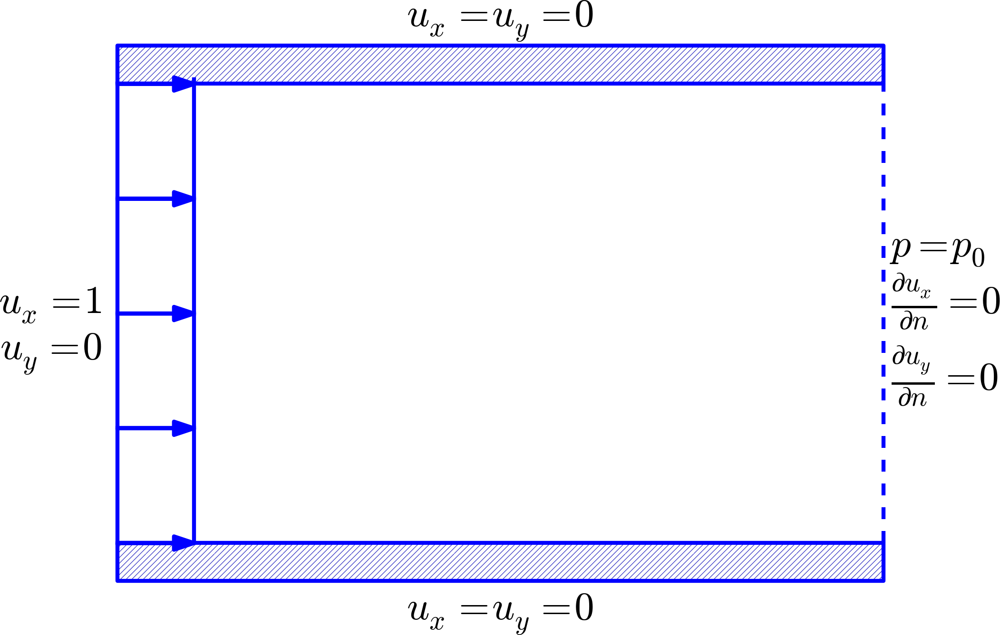
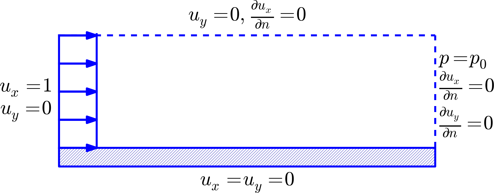
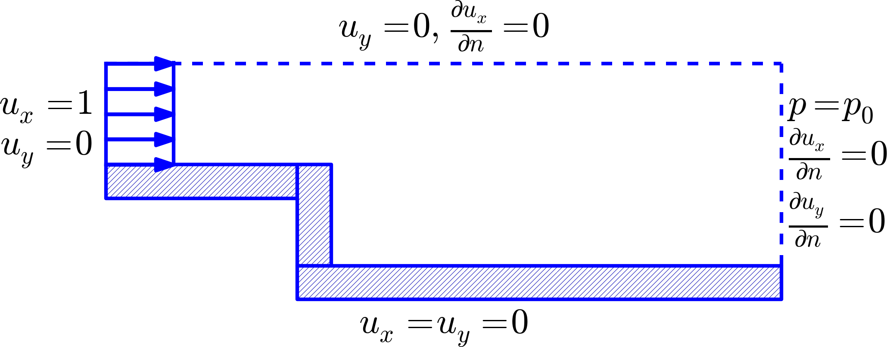

Figure 1: Flow around a cylinder.

The physical and mathematical problem
Lots of physical applications involve fluid flow
The physical assumptions behind the Navier-Stokes equations
The Navier-Stokes equations
Boundary conditions
The classical splitting method
A simple, naive approach
A working scheme
We solve the implicit system by a splitting technique
A Poisson equation must be solved to ensure \( \nabla\cdot\u = 0 \)
Summary
Boundary conditions
Spatial discretization by the finite element method
Increasing the implicitness
Methods based on slight compressibility
Applications
Assumptions:
Figure 1: Flow around a cylinder.
Momentum balance (Newton's 2nd law): $$ \u_t + (\u\cdot\nabla) \u = -\frac{1}{\varrho}\nabla p + \nu\nabla^2\u + \f $$
Mass balance (eq. of continuity): $$ \nabla\cdot\u = 0 $$
Idea: split the N-S equations into simpler problems (operator splitting).
The equation for \( \u \) looks like a diffusion equation...why not a Forward Euler scheme? $$ \u_t + (\u\cdot\nabla) \u = -\frac{1}{\varrho}\nabla p + \nu\nabla^2\u + \f $$ $$ \frac{\u^{n+1}-\u^n}{\Delta t} + (\u^n\cdot\nabla)\u^n = -\frac{1}{\varrho} \nabla p^n + \nu\nabla^2\u^n + \f^n $$ $$ \u^{n+1} = \u^n - \Delta t(\u^n\cdot\nabla)\u^n -\frac{\Delta t}{\varrho} \nabla p^n + \Delta t\,\nu\nabla^2\u^n + \Delta t\f^n $$
Two fundamental problems:
Idea: Forward Euler in time, but evaluate \( \nabla p \) at \( t_{n+1} \) and enforce \( \nabla\cdot\u^{n+1} = 0 \). $$ \begin{align*} \u^{n+1} &= \u^n - \Delta t(\u^n\cdot\nabla)\u^n -\frac{\Delta t}{\varrho} \nabla p^{n+1} + \Delta t\,\nu\nabla^2\u^n + \Delta t\f^n,\\ \nabla\cdot\u^{n+1} &= 0 \thinspace \end{align*} $$
Note: implicit system for \( \u^{n+1} \) and \( p^{n+1} \)
Seek correction \( \delta\u \) such that $$ \u^{n+1} = \u^* + \delta\u $$ fulfills $$ \nabla\cdot \u^{n+1} = 0 $$
Subtract \( \u^* \) equation from original \( \u^{n+1} \) equation to find \( \delta\u \): $$ \delta\u = \u^{n+1} - \u^* = -\frac{\Delta t}{\varrho}\nabla\Phi $$ where $$ \Phi = p^{n+1} - \beta p^n $$
The oldest methods had \( \beta=0 \), but \( \beta\neq 0 \) gives in general better speed and accuracy.
\( \nabla\cdot \u^{n+1} = 0 \) implies $$ \nabla\cdot\delta\u = - \nabla\cdot \u^* $$ which gives $$ \nabla^2 \Phi = \frac{\varrho}{\Delta t}\nabla\cdot\u^* $$
When \( \Phi \) is computed, $$ \u^{n+1} = \u^* -\frac{\Delta t}{\varrho}\nabla\Phi $$ and $$ p^{n+1} = \Phi + \beta p^n $$
Problem: \( p \) condition at one point only in the original N-S equations. Now we need boundary conditions for \( \Phi \) along the whole boundary (Poisson equation).
Natural boundary condition: $$ \nu\frac{\partial\u}{\partial n} - p\normalvec \quad (=0)$$ Usually \( {\partial\u /\partial n}=0 \) and \( p=0 \) at outlets.
Pressure Poisson equation: $$ \begin{equation} \int_\Omega\nabla\Phi\cdot\nabla v^{(\Phi)}\dx = \frac{\varrho}{\Delta t}\int_\Omega \nabla\cdot\u^*\, v^{(\Phi)}\dx + \int_{\partial\Omega_{N,p}} \frac{\partial\Phi}{\partial n}v^{(\Phi)}\ds, \quad\forall v^{(\Phi)}\in V^{(\Phi)} \tp \label{ns:split:Poisson:vf} \end{equation} $$
Velocity update: $$ \begin{equation} \int_\Omega \u\cdot\v^{(u)}\dx = \int_{\Omega} (\u^* -\frac{\Delta t}{\varrho} \nabla\Phi)\cdot\v^{(u)}\dx,\quad\forall\v^{(u)}\in V^{(u)} \tp \label{ns:split:u:np1:vf} \end{equation} $$
Pressure update: $$ \begin{equation} \int_\Omega p v^{(\Phi)}\dx = \int_{\Omega} (\Phi + \beta p_1)v^{(\Phi)}\dx, \quad\forall v^{(\Phi)}\in V^{(\Phi)} \tp \label{ns:split:p:np1:vf} \end{equation} $$
Stability (due to Forward Euler-style scheme): $$ \begin{equation} \Delta t \leq \frac{h^2}{2\nu + Uh} \tp \end{equation} $$ \( h \): minimum element size, \( U \): typical velocity.
Better stability by a Backward Euler scheme: $$ \begin{align} \u^{n+1} &= \u^n - \Delta t(\u^{n+1}\cdot\nabla)\u^{n+1} -\frac{\Delta t}{\varrho} \nabla p^{n+1} + \Delta t\,\nu\nabla^2\u^{n+1} + \Delta t\f^{n+1}, \label{ns:split:BE}\\ \nabla\cdot\u^{n+1} &= 0 \tp \end{align} $$
Intermediate velocity (\( \nabla p^{n+1}\rightarrow \beta p^n \)): $$ \u^{*} = \u^n - \Delta t(\u^{*}\cdot\nabla)\u^{*} - \beta\frac{\Delta t}{\varrho} p^{n+1} + \Delta t\,\nu\nabla^2\u^{*} + \Delta t\f^{n+1} \label{ns:split:BE1} \thinspace $$
Deal with nonlinearity in a simple way (1 Pickard it.): $$ \begin{equation} (\u^{*}\cdot\nabla)\u^{*} \approx (\u^{n}\cdot\nabla)\u^{*} \tp \end{equation} $$
Then we have a linear problem for \( \u^* \): $$ \u^{*} = \u^n - \Delta t(\u^{n}\cdot\nabla)\u^{*} - \beta\frac{\Delta t}{\varrho} \nabla p^{n} + \Delta t\,\nu\nabla^2\u^{*} + \Delta t\f^{n+1} \label{ns:split:BE2} \thinspace $$
Correction (assume \( \u^{n+1}-\u^* \) small): $$ \delta\u = \Delta t((\u^{n+1}\cdot\nabla)\u^{n+1} - (\u^{n}\cdot\nabla)\u^{*}) -\frac{\Delta t}{\varrho} \nabla \Phi + \Delta t\,\nu (\nabla^2 (\u^{n+1} - \u^*) \approx -\frac{\Delta t}{\varrho} \nabla \Phi \tp $$
So, as before, $$ \nabla^2 \Phi = \frac{\varrho}{\Delta t}\nabla\cdot\u^* $$
\( \nabla\cdot\u=0 \) is problematic. Allow slight compressibility in the fluid: $$ p_t + c^2\nabla\cdot\u =0 \tp $$ \( c \): speed of sound.
Now we have evolution equations for \( \u \) and \( p \): $$ \begin{align} \u_t &= -(\u\cdot\nabla) \u -\frac{1}{\varrho}\nabla p + \nu\nabla^2\u + \f,\\ p_t &= - c^2\nabla\cdot\u \tp \end{align} $$
Forward Euler: $$ \begin{align} \u^{n+1} &= \u^n - \Delta t (\u^n\cdot\nabla) \u^n -\frac{\Delta t}{\varrho}\nabla p^n + \Delta t\,\nu\nabla^2\u^n + \Delta t\f^n,\\ p^{n+1} &= p^n - \Delta t c^2\nabla\cdot\u^n \tp \end{align} $$


